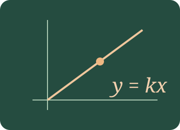
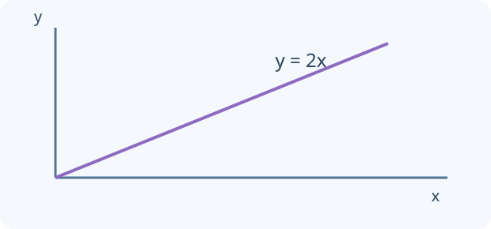

Algebra I
Connect stories, tables, formulas and graphs. Use variables and coordinates, then connect direct and inverse proportion to stories, tables, formulas and graphs.

What will you learn?
- Use variables to represent changing quantities.
- Plot and read coordinates on a set of axes.
- Recognise direct proportion through its constant ratio.
- Recognise inverse proportion through its constant product.
Build the idea, one step at a time.
A variable is a symbol for a quantity that can change or is not yet known. An expression describes a value; an equation states that two values are equal. A table, a formula and a graph can describe the same relationship. Decide first what each variable measures, including its units.
Coordinates are ordered pairs (x,y): horizontal position first, then vertical position. Direct proportion has a constant ratio y/x and can be written y = kx; its graph goes through the origin. Inverse proportion has a constant product xy and can be written y = k/x for nonzero x. An increasing relationship is not automatically direct proportion, especially if it includes a fixed starting amount.

01 · Translate a story into a formula
Use a variable for a changing quantity and distinguish proportional from non-proportional rules.
A variable is a number that may change. The expression and the picture should describe the same total.
x counts boxes, while y counts all the pens. Each box contains 5 pens. The extra fixed pens mean this relationship is not direct proportion.
y = 5x + 2 · total = 17 pens
02 · Locate a point on a set of axes
Read the horizontal x-coordinate first and the vertical y-coordinate second.
“Along the corridor, then up the stairs”: horizontal x first, vertical y second. Negative y moves down.
Move 3 units right, then 2 units up. The diagram marks the resulting position.
P = (3, 2)
03 · Direct proportion: the price of notebooks
Connect a constant unit rate to a table, a formula and a straight line through the origin.
Divide a known cost by the number of notebooks to find the cost of one, then multiply.
There is no fixed delivery charge. Doubling the number doubles the cost. For every non-zero x, y/x is the same constant k.
y = 3x · 4 notebooks cost £12
| Notebooks x | 0 | 1 | 2 | 4 |
|---|---|---|---|---|
| Cost y (£) | 0 | 3 | 6 | 12 |
04 · Inverse proportion: sharing a fixed job
Keep the product constant while connecting a table, a formula and a curved graph.
Make a table and multiply each pair n × t. The products should match. Try 1, 2, 3, 4, 6 and 12 workers.
The workers are equally productive, share the same fixed job perfectly and do not get in each other’s way. These assumptions make the time inversely proportional to the worker count.
t = 24/n · time = 6 h
| Workers n | 1 | 2 | 4 | 4 |
|---|---|---|---|---|
| Time t (h) | 24 | 12 | 6 | 6 |
You can read these explanations without operating the simulator. The practical activities, games and revision below let you apply the ideas and check your reasoning.
Now investigate →Predict. Change. Explain.
Read the explanations, work on paper, then use the model to check a prediction. Practice here is separate from a recorded Test yourself quiz.
Compare, explain and try again
All instructions, models and worked examples are on this platform. Use “A little support” for a guided method, or “Go further” for extensions. Your working notes and lesson checks are not sent to the teacher.
Try it. Solve it. Play again.
Rule Detectives, Coordinate Quest, Mystery Machine Mission, Proportion Paintworks, Variable Spotter, Coordinate Detective, Mystery Picture Studio: move cards, build a model and use feedback to work out the next step.
Before the questions and games
Study the preparation notes and worked examples →
Learn the vocabulary, follow the reasoning and compare a model solution before trying the revision simulator or question games.
Ready to test your understanding?
Explore 60 questions for Algebra I. Select question areas and levels, practise with explanations or take Test yourself, then retry mistakes.